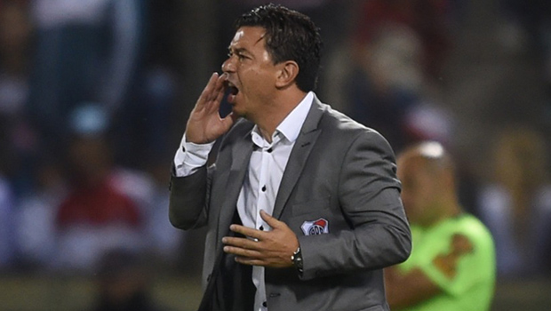

El entrenador habló con los medios de prensa luego del triunfo 3-0 sobre Argentino de Merlo, en Salta, en el debut en esta nueva edición de la Copa Argentina.
"En los primeros 45 minutos nos obligaron a jugar mal, no encontrábamos nuestro juego, confundíamos los caminos. Quiero felicitar al rival, porque siempre intentó jugar de manera digna, con mucha valentía", indicó Marcelo Gallardo.
Y agregó: "En el segundo tiempo cambiamos las formas, sabíamos que un gol nuestro iba a cambiar. El equipo mostró una postura diferente y encontró la forma que nos identifica. Teníamos que empezar a marcar una diferencia lógica en el segundo tiempo, que no pasó en el primero".
Gallardo reconoció que "necesitábamos ser nosotros, más allá de que el rival nos hizo jugar un poco mal. Después, los jugadores resolvieron de la manera más adecuada, subimos el ritmo, impusimos nuestras condiciones, que era lo que necesitábamos, y se terminó dando un partido que nos benefició en ese sentido".
"Tengo jugadores de recambio para encontrar variantes, no les toca jugar desde el inicio, pero están preparados para entrar y resolver situaciones. Necesito que estén todos preparados, el que inicia y el que no. El que entra, lo hace para darte soluciones y en eso nos sostenemos muchísimo", continuó el DT.
Sobre el compromiso que viene, frente a Palestino por Copa Libertadores, Gallardo expresó: "En Chile jugamos un partido importante para clasificarnos, es de muchísima importancia".
· 28/04/2019
Gallardo: "No fuimos claros para seguir controlando
el juego"
· 28/04/2019
Copa de la Superliga: River empató en la ida
ante Aldosivi
· 24/04/2019
River ganó en Chile y clasificó a octavos de
final
· 17/04/2019
Copa Argentina: River goleó en Salta y dio el
primer paso